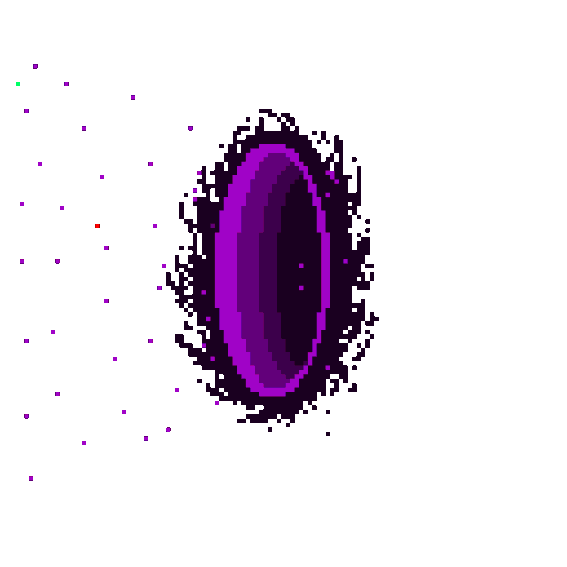

Hello!
Data-driven and highly organized. Detail oriented. Prudent.
Team player. Entrepreneur. Multi-principled.
Experienced within different professions such as Web3 Community Management,
Marketing, Business Development experience, Chemical Engineering,
news media start-up co-founder, and content editor
Skills

Inter-disciplinary Approach
From Chemical Engineering to Marketing, I approach problems inter-disciplinary to holistically solve them with the most efficient way, with engineering principles, ethics and social soft skills from previous experiences

Data-Driven & Analytical Thinking
Data-driven and analytical thinking, utilization of different tools to solve problems with data-oriented methods.
Get In Touch
If you want to learn more
You can contact me anytime to learn more what I am up to and what I am aiming to achieve.
 CONTACT ME
CONTACT ME